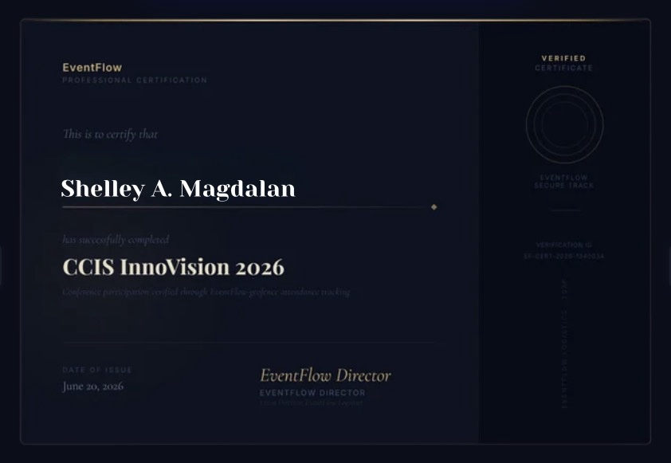
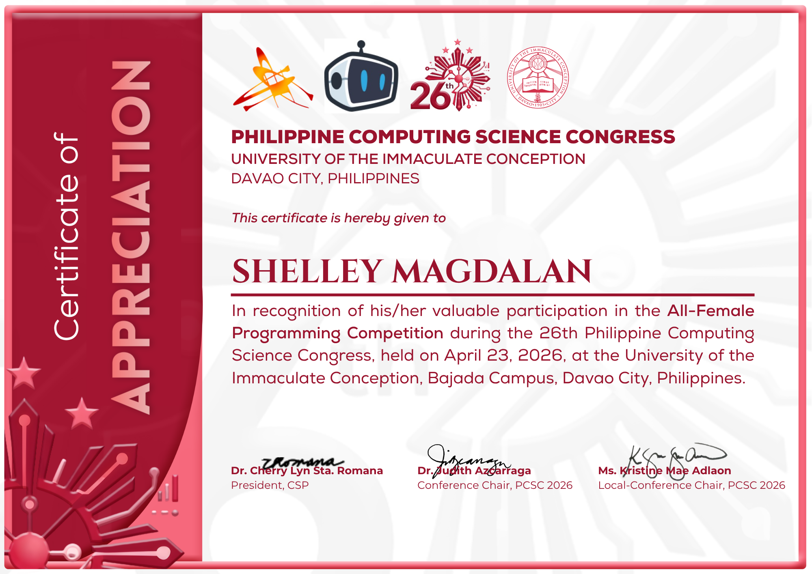
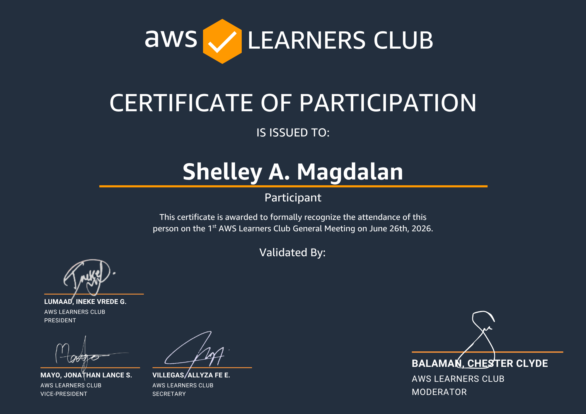
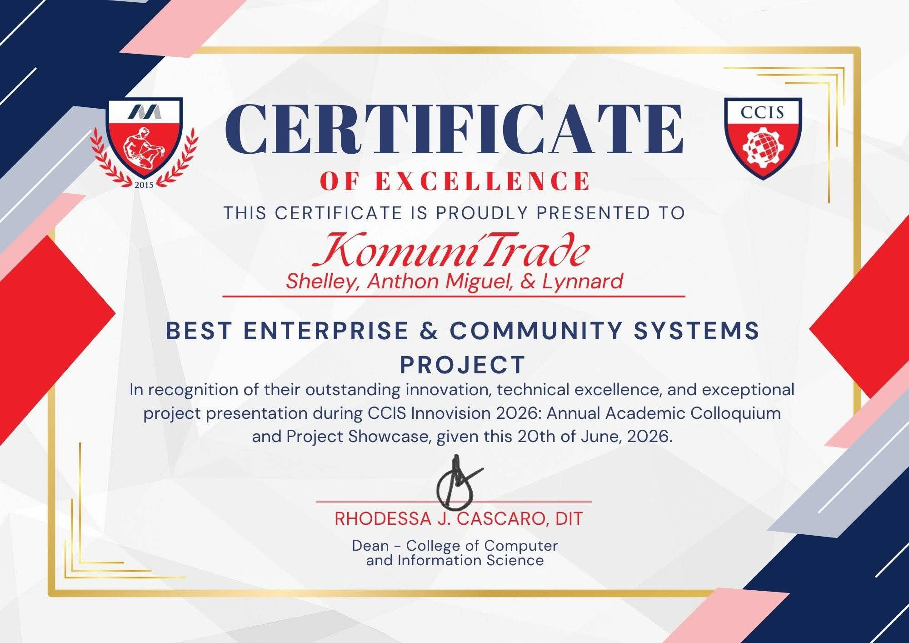
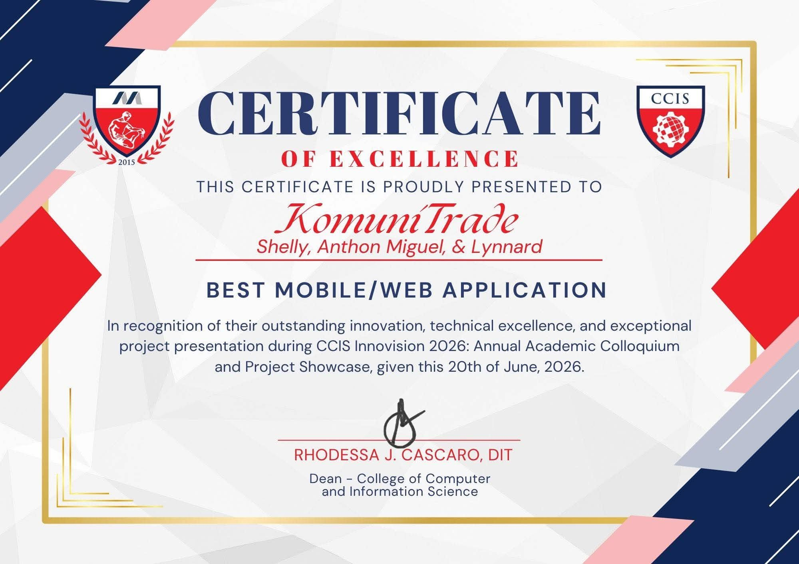
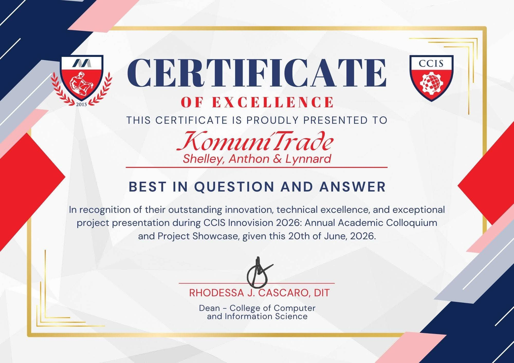

Java · Desktop App
AshTrack
Financial Tracker App
A financial tracker built with Java that helps users manage and track expenses and income efficiently.
View on GitHub →✦ Coordinates fixed · DAVAO CITY, PH
BSIS · 2nd Year — Information Systems
I chart a path through code the way you'd chart a path through the sky — one deliberate point at a time, until the shape of something useful appears. Web developer in training, systems thinker by major.
✦ About

Welcome to my portfolio. I'm a second-year Bachelor of Science in Information Systems student, building a practical foundation in web development, databases, and software design — mostly by taking on projects that force me to learn the parts I don't know yet. Below is a record of the certifications I've earned and the systems I've shipped so far.
✦ Credentials

Information Technology Specialist

Microsoft Office Specialist

Innovision Certificate

AllWomen Certificate

AWS Certificate
✦ CCIS InnoVision Awards

BEST ENTERPRISE & COMMUNITY SYSTEMS PROJECT

BEST MOBILE/WEB APPLICATION

BEST IN QUESTION AND ANSWER
✦ Mission Log
Java · Desktop App
Financial Tracker App
A financial tracker built with Java that helps users manage and track expenses and income efficiently.
View on GitHub →HTML · CSS · Landing Page
Smart Farming Landing Page
A modern, responsive landing page for GreenSense — built with glassmorphism and responsive layouts.
View Landing Page →JavaScript · REST API
Movie Search Web Application
A responsive app that fetches movie data from the OMDb REST API and displays results dynamically.
Open Web App →Web App · UI Demo
Interactive Web Application
A deployed demo showcasing dynamic UI, responsiveness, and client-side interactivity.
View Demo →C# · Inventory System
Inventory Management System
A staff and admin inventory application for computer tools, built with C# to streamline tracking.
Web App · AI · Marketplace
Trade Smart Within Your Community
A hyperlocal marketplace platform combining AI, location-based filtering, and seller verification to promote safer, more credible buying and selling within nearby barangays and communities.
Open Web App →C++ · Desktop App
Expense Tracker
An expense tracking application built in C++ to help users monitor daily expenses with ease.
Web App · Healthcare · AI
Health Records, Decision Support & CRM
A healthcare system managing electronic health records with an AI-powered triage tool for prioritizing patient care.
Open VitaLink App →Web App · Property Management
Rental Management System
A rental management system streamlining property and tenant tracking and the administrative workflow.
Open Web App →